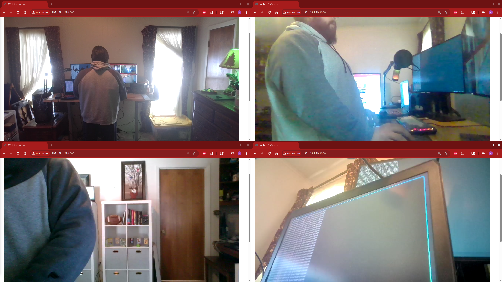

Rusty Security Camera is a toy project. This project has three part a camera program (current running on laptops), a server the cameras send their video to, and a web frontend that lets you select a camera.

Project uses Rust, SDL3, FFMpeg, and WebRTC.
Next steps: Include using FFMpeg to combine the four cameras into one video feed and making smaller cameras using Raspberry PI.